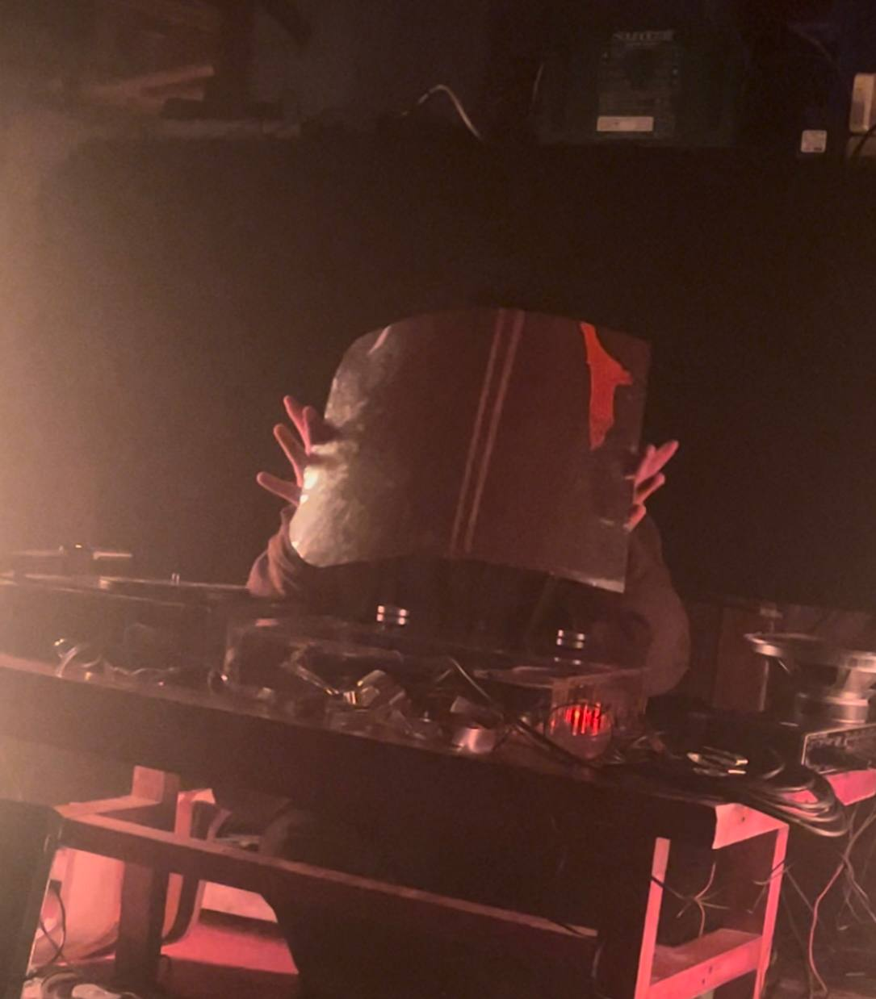
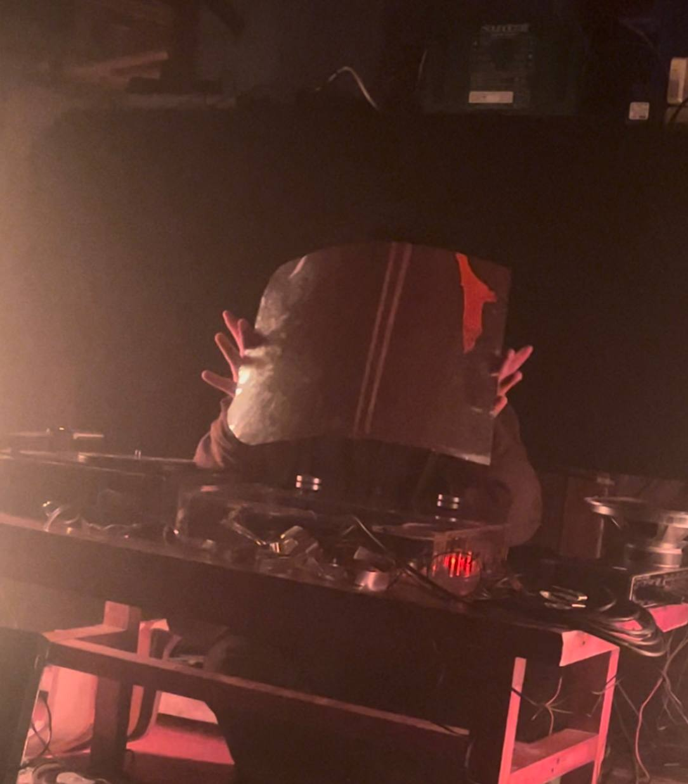

Playing with phonography to shape inter-objectivist fantasies and NoFi environments. “mikrokosmos”, a work in progress project, is a montage of runaway daily life's recordings, metamorphic spectral processing, and fragmented melodies – inspired by a wide variety of '900 thoughts, from Sanguineti to Le Corbusier, Xenakis and Westerkamp. The live setting for these sketches is a low-volume listening ground aired by a self-assembled, cheap multi-speakers system.

 
